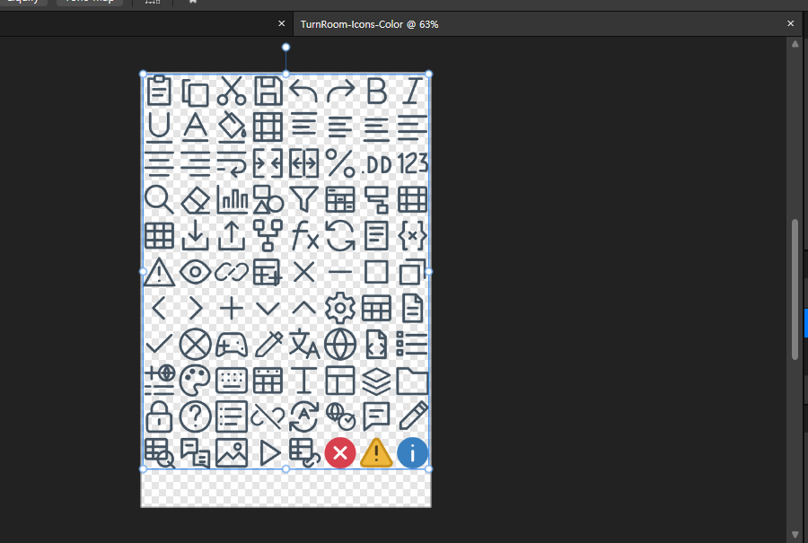
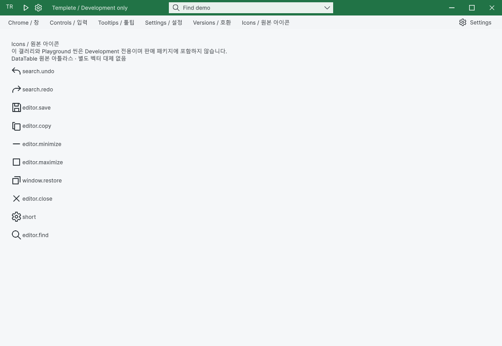

Tracefolio REPORTS & ISSUES
Tracefolio REPORTS & ISSUESDataTable 원본 아이콘과 창 제어 렌더러를 Templete로 통합
완료별도 벡터 대체를 제거하고 DataTable 원본 아틀라스·GUID·그리기 규칙을 공유했습니다.
작업 결과
TemplateIcons/TemplateIcon/WindowControls를 공통 모체로 연결했습니다. 실제 두 제품의 제목줄과 개발 갤러리에서 원본 아이콘을 확인했습니다.
변경 내용
적용 내용
DataTable의 두 PNG를 바이트·GUID 변경 없이 Templete/Editor/Art로 이동했습니다. 기존 SpreadsheetRibbonIcons는 공통 렌더러 위임자로 유지했습니다. PixoraIcon과 ChromeGlyph의 별도 벡터 그리기를 제거했습니다. 최소화·최대화·복원·닫기는 두 UI 엔진이 동일 Paint를 사용합니다. Undo/Redo는 기존 카탈로그 4·5번 셀입니다. 이미지와 재생은 원본 82·83번 셀을 사용합니다.
Affinity 3.3.1.4940에서 원본을 열어 Development/Art/TurnRoom-Icons-Color.af(650,099바이트)로 저장했습니다. 래스터 원본 레이어를 가진 네이티브 문서이며 벡터 재제작으로 보고하지 않습니다. CLI SDK 쓰기는 PERMISSION_DENIED였고 실제 GUI 열기/다른 이름 저장으로 진행했습니다.


검증
원본 PNG 바이트 동일·GUID 보존. 공통 배치 108개 검사 통과. GUID 3,409개, 중복 0·누락 메타 0. 1.2.0 패키지 세 개의 현재 C#/JSON 일치 및 Development 제외 확인. 소비자 프로젝트 설치·사용자 설정 보존·기존 Common 루트 자동 이동 검사 통과. 이미지 8개 무손실 압축, 각 53KB 미만. 프로젝트 커밋 f9a70ee0 푸시 성공.
남은 사항
Windows / Unity 6000.0.83f1에서 검증했습니다. 다른 OS·배율·물리 모니터 연결 변경은 미확인입니다. DataTable 전체 가이드 검사 238건의 과거 화면/소스 불일치는 남아 있으며 통과로 변경하지 않았습니다. 이번에 다시 캡처한 26개 기록은 현재 소스와 일치합니다. Pixora Undo/Redo 기능을 새로 추가한 것은 아닙니다.
작업 시간
- 제안 시간: 40~80분
- 실제로 완료된 시간: 시작 2026-10-30 17:16:52 KST · 구현·실행 검증 및 프로젝트 푸시 완료. 보고 작성 시점 2026-10-30 18:37:25 KST, 경과 80.6분. 보고서 공개 배포 확인은 별도 단계입니다.
- XERJ: 사용 — Tools/Search/Xerj.ps1 Status 및 Search PreserveVisiblePeer 호출. 후보를 현재 WindowFocus/WindowFrame/WorkbookNativeWindow 소스와 네이티브 실행 기록으로 확인했습니다.